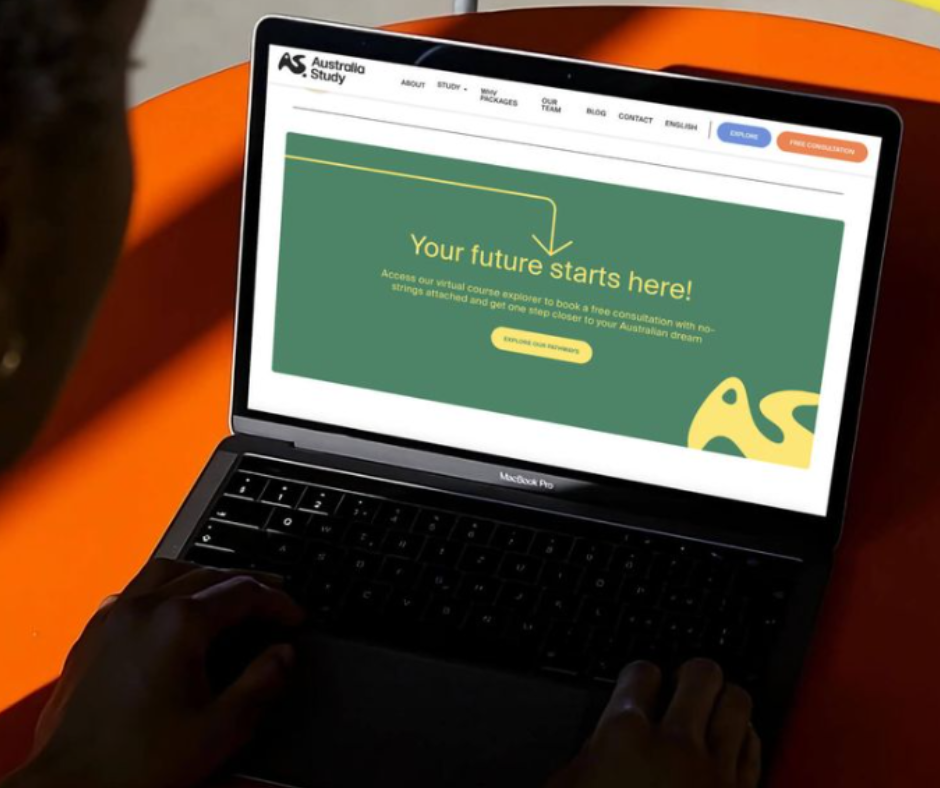
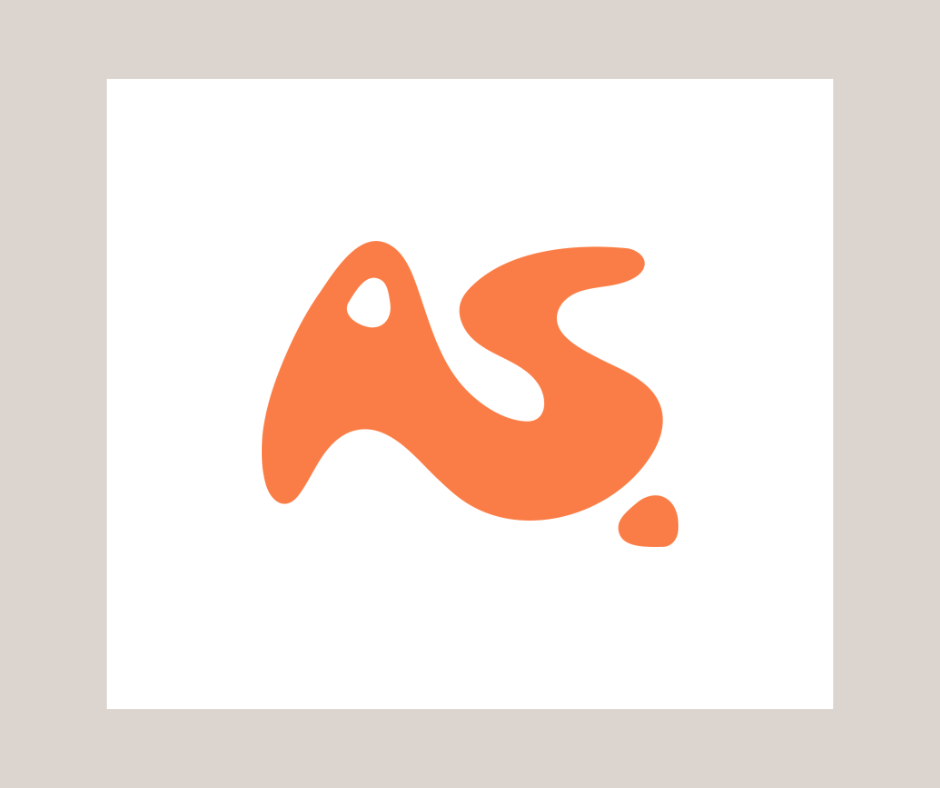

Website / Digital Presence
Australia Study needed a digital presence that felt clear, trustworthy, and easy to engage with for prospective international students. I translated the new identity into a website direction that balanced friendliness with credibility, using strong colour blocking, simple navigation, and clear calls to action to make the platform feel more accessible from the first interaction. This helped position the brand as supportive and modern, rather than overly corporate or institutional.
The interface used the brand palette in a way that felt optimistic and geographically grounded, with warm tones and organic shapes carrying the identity into the digital experience. The result was a web presence that made the service feel more approachable while still communicating professionalism and structure.

Logo Identity
The Australia Study identity was built around a custom “AS” symbol designed to feel fluid, memorable, and culturally grounded. The form draws inspiration from the Australian map outline and the boomerang, using shape as a way to communicate movement, direction, and the idea of a student journey. A soft dot element within the mark acts as a subtle origin point, reinforcing the message that this is where the journey begins.
Rather than relying on a generic education aesthetic, the logo was designed to feel warm and distinctive. This gave the brand a recognisable core mark that could scale across web, print, and campaign applications while still feeling modern and approachable.

Brand Applications
The identity system was designed to extend well beyond the logo itself, with applications across printed guides, business collateral, and outdoor advertising. These mockups show how the Australia Study brand holds together across different formats while keeping a consistent visual language. The warm orange, eucalyptus green, and soft neutral tones help the brand stand out while still feeling supportive, aspirational, and easy to trust.
By applying the system across both promotional and informational materials, the project demonstrates how a single visual identity can create consistency at every touchpoint. This made the brand feel more established, more scalable, and better equipped to communicate with students across both digital and physical spaces.